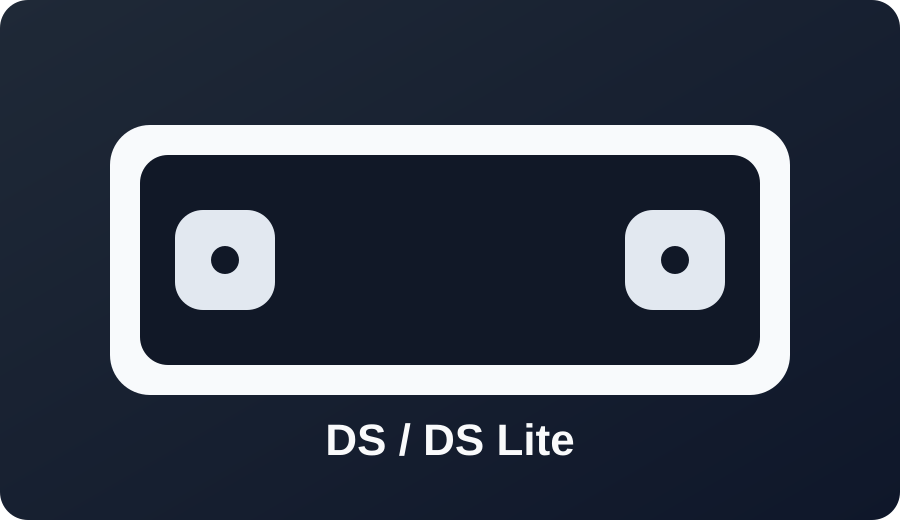

DS / DS Lite

Best path: flashcart method. Match cart support to model, region, and SD/SDHC size.
Firmware is not usually the limiting factor for this family.

Best path: flashcart method. Match cart support to model, region, and SD/SDHC size.
Firmware is not usually the limiting factor for this family.